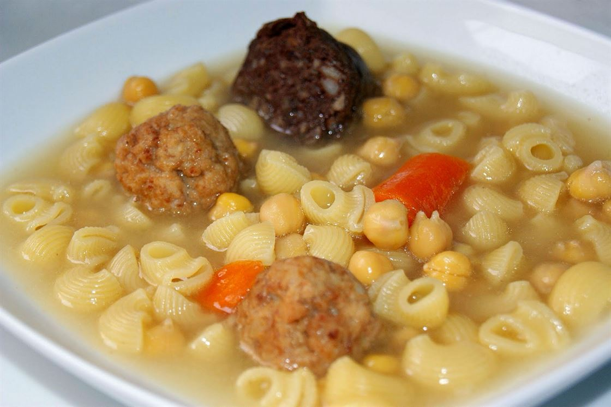

Escudella

Considerada el plat de cullera per excel·lència, aquesta elaboració recull tota la substància de la terra i el bestiar en un brou reconfortant que, des de fa segles, presideix les taules catalanes durant els mesos més freds de l'any.